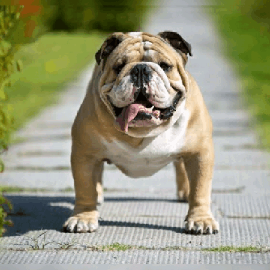
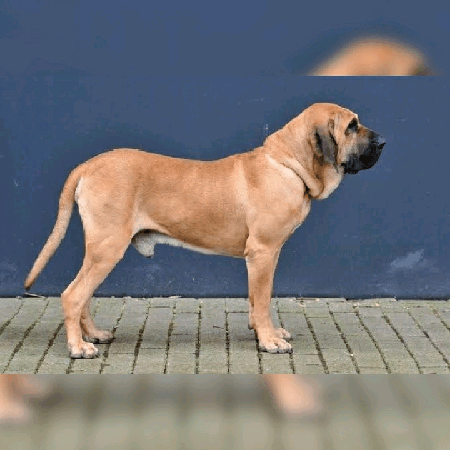

Cães
Felinos
Peixes
Akita:
- Origem: Inglaterra e Estados Unidos
- Peso: 9-13,5 kg
- Altura: 33-38 cm
- Expectativa de vida: 10-15 anos
Golden Retriever:
- Origem: Escócia
- Peso: 25-34 kg
- Altura: 56-60 cm
- Expectativa de vida: 10-12 anos
Husky Siberiano:
- Origem: Rússia
- Peso: 15-27 kg
- Altura: 50-60 cm
- Expectativa de vida: 12-15 anos
Mastim Tibetano:
- Origem: China, Tibete, Nepal e Índia
- Altura: 61-76 cm
- Peso: 34-73 kg
- Expectativa de vida: de 12 a 15 anos
Pastor Alemão:
- Origem: Alemanha
- Peso: 22-40 kg
- Altura: 55-60 cm
- Expectativa de vida: 7-10 anos
Pastor Australiano:
- Origem: Estados Unidos
- Peso: 45-58 kg
- Altura: 18-30 cm
- Expectativa de vida: 12-15 anos
Pastor de shetland:
- Origem: Escócia
- Peso: 6,3-12 kg
- Altura: 33-40 cm
- Expectativa de vida: 12-14 anos
Shiba:
- Origem: Japão
- Peso: 7-11 kg
- Altura: 33-43 cm
- Expectativa de vida: 12-15 anos
weimaraner:
- Origem: Alemanha
- Peso: 25-41 kg
- Altura: 58-68 cm
- Expectativa de vida: 10-13 anos
Yorkshire Terrier:
- Origem: Inglaterra
- Peso: 2-3 kg
- Altura: 18-20 cm
- Expectativa de vida: 12-15 anos
Vira-lata:
- Origem: indefinida
- Peso: mais de 2kg
- Altura: mais de 15cm
- Expectativa de vida: mais de 10 anos
Poodle:
- Origem: França
- Peso: 2-3 kg (toy), 4-7 kg (miniatura) e 27-32 kg (standard ou gigante)
- Altura: até 25 cm (toy), 25-38 cm (miniatura) e mais de 38 cm (standard ou gigante)
- Expectativa de vida: 10-18 anos
Beagle:
- Origem: Japão
- Peso: 32-59 kg
- Altura: 61-71 cm
- Expectativa de vida: 10-13 anos
Bishon Frise:
- Origem: França
- Peso: 5,5-8 kg
- Altura: 24-29 cm
- Expectativa de vida: 14-15 anos
Basset Hound:
- Origem: França
- Peso: 18-30 kg
- Altura: 58-68 kg
- Expectativa de vida: 12-13 anos
Border Collie:
- Origem: Grã-Bretanha
- Peso: 12-20 kg
- Altura: 46-56 cm
- Expectativa de vida: 10-17 anos
Boston Terrier:
- Origem: EUA e Europa
- Peso: 4-11 kg
- Altura: 38-43 cm
- Expectativa de vida: 13-15 anos
Boxer:
- Origem: Alemanha
- Peso: 22-36 kg
- Altura: 53-63 cm
- Expectativa de vida: 10-12 anos
Buldogue Frances:
- Origem: Inglaterra
- Peso: 9-13 kg
- Altura: 30-35 cm
- Expectativa de vida: 12-14 anos
Buldogue Inglês:

- Origem: Inglaterra e França
- Peso: 18-22 kg
- Altura: 35-38 cm
- Expectativa de vida: 8-10 anos
Bull Terrier:
- Origem: Inglaterra
- Peso: 22-31 kg
- Altura: 53-55 cm
- Expectativa de vida: 12-13 anos
Cane Corso:
- Origem: Itália
- Peso: 45-50 kg
- Altura: 62-72 cm
- Expectativa de vida: 10-12 anos
Chihuahua:

- Origem: México
- Peso: 1-3 kg
- Altura: 15-23 cm
- Expectativa de vida: 12-20 anos
Chow Chow:
- Origem: China
- Peso: 20-32 kg
- Altura: 43-50 cm
- Expectativa de vida: 8-12 anos
Boiadeiro Australiano:
- Origem: Inglaterra
- Peso: 9-13 kg
- Altura: 30-35 cm
- Expectativa de vida: 12-14 anos
Cocker Spaniel Inglês:
- Origem: Inglaterra
- Peso: 11-15 kg
- Altura: 38-43 cm
- Expectativa de vida: 12-14 anos
Jack Russell Terrier:
- Origem: Inglaterra
- Peso: 9-13 kg
- Altura: 30-35 cm
- Expectativa de vida: 12-14 anos
Lulu da Pomerânia:
- Origem: Alemanha
- Peso: 1-3 kg
- Altura: 15-17,5 cm
- Expectativa de vida: 12-16 anos
Labrador Retriever:
- Origem: Reino Unido e Canadá
- Peso: 25–36 kg
- Altura: 54,5–62 cm
- Expectativa de vida: 10-12 anos
Pinscher Miniatura:
- Origem: Inglaterra
- Peso: 9-13 kg
- Altura: 30-35 cm
- Expectativa de vida: 12-14 anos
Hottweiler:
- Origem: Alemanha
- Peso: 34-58 kg
- Altura: 55-68 cm
- Expectativa de vida: 8-10 anos
Schnauzer:
- Origem: Alemanha
- Peso: 5-7 kg
- Altura: 30-35 cm
- Expectativa de vida: 12-14 anos
Staffordshire Bull Terrier:
- Origem: Inglaterra
- Peso: 10-15,5 kg
- Altura: 25-30 cm
- Expectativa de vida: 11-13 anos
Shar-pei:
- Origem: China
- Peso: 20-27 kg
- Altura: 45-50 cm
- Expectativa de vida: 8-12 anos
Shih tzu:
- Origem: China
- Peso: 4-7 kg
- Altura: 20-28 cm
- Expectativa de vida: 10-16 anos
Cavalier King Charles Spaniel:
- Origem: Reino Unido
- Peso: 30-33 kg
- Altura: 6-8 cm
- Expectativa de Vida: 12-15 anos
Dashshund:
- Origem: Alemanha
- Peso: até 5 kg (mini) e 5-7 kg (stand)
- Altura: 13-15 cm (mini) e 20-23 cm (stand)
- Expectativa de vida: 12-16 anos
Dálmata:
- Origem: Inglaterra
- Peso: 9-13 kg
- Altura: 30-35 cm
- Expectativa de vida: 12-14 anos
Doberman:
- Origem: Alemanha
- Peso: 27-45 kg
- Altura: 61-71 cm
- Expectativa de vida: 10-12 anos
Dogo Argentino:
- Origem: Argentina
- Peso: 36-45 kg
- Altura: 58-68 cm
- Expectativa de vida: 9-15 anos
Dogue Alemão:
- Origem: Alemanha
- Peso: 44-90 kg
- Altura: 71-86 cm
- Expectativa de vida: 6-8 anos
Fila Brasileiro:

- Origem: Brasil
- Peso: 70 kg
- Altura: 75 cm
- Expectativa de vida: 8-12 anos
Lhasa Apso:

- Origem: Tibete
- Peso: 5-8 kg
- Altura: 23-25 cm
- Expectativa de vida: 12-15 anos
Maltês:
- Origem: Região central do mediterrâneo
- Peso: 3-3,5 kg
- Altura: 20-25 cm
- Expectativa de vida: 12-15 anos
Mastiff Inglês:
- Origem: Inglaterra
- Peso: 54,5-104 kg
- Altura: 71-91 cm
- Expectativa de vida: 6-10 anos
Pêquines:
- Origem: China
- Peso: até 6 kg
- Altura: 15-23 cm
- Expectativa de vida: 12-14 anos
Pêquines:
- Origem: China
- Peso: até 6 kg
- Altura: 15-23 cm
- Expectativa de vida: 12-14 anos
Pug:
- Origem: China
- Peso: 6-8 kg
- Altura: 25-30 cm
- Expectativa de vida: 13-15 anos